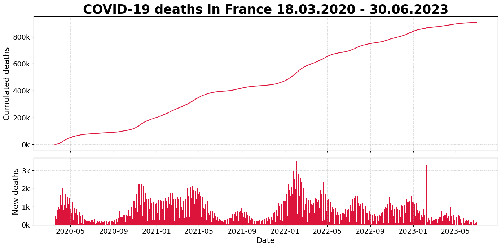
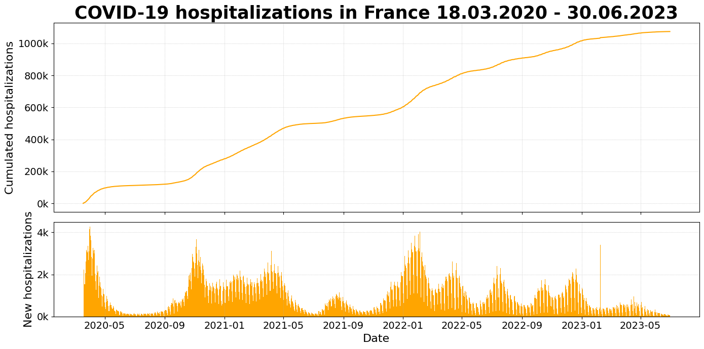
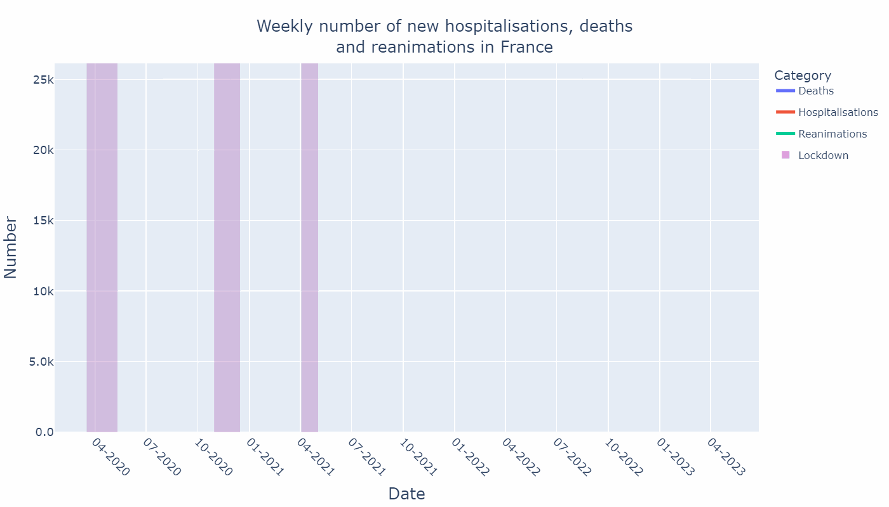
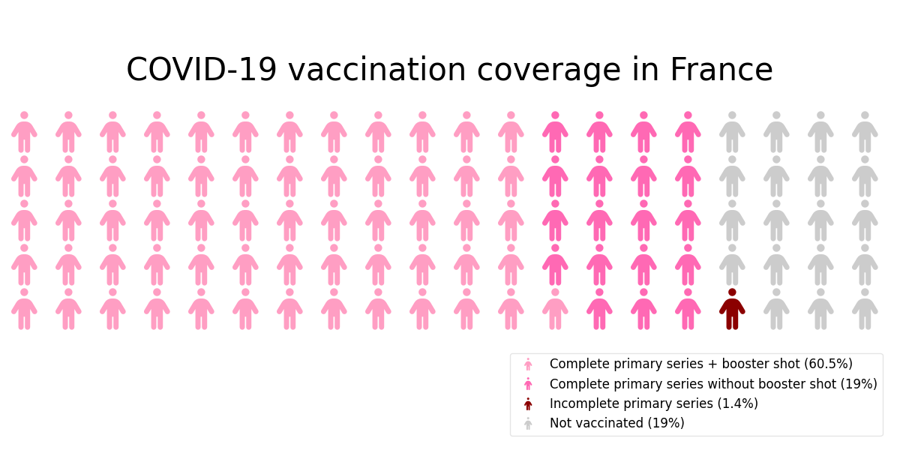
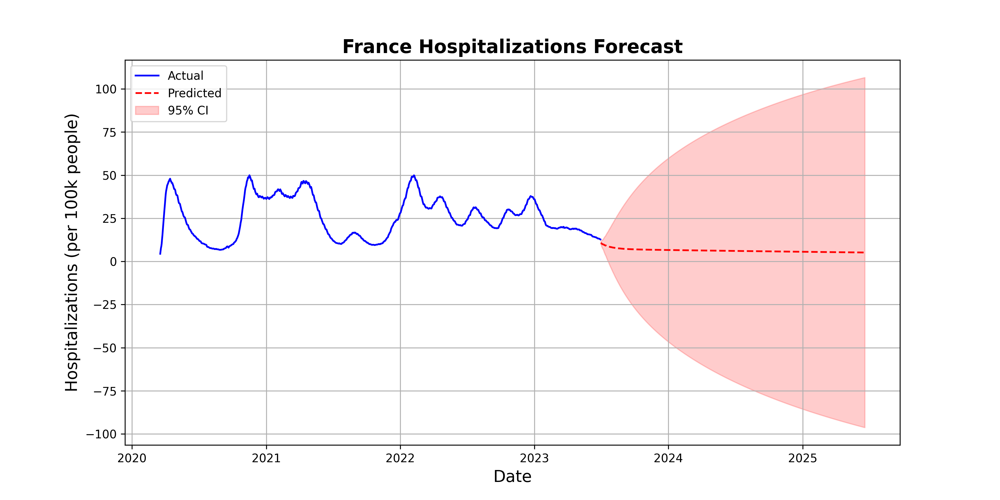
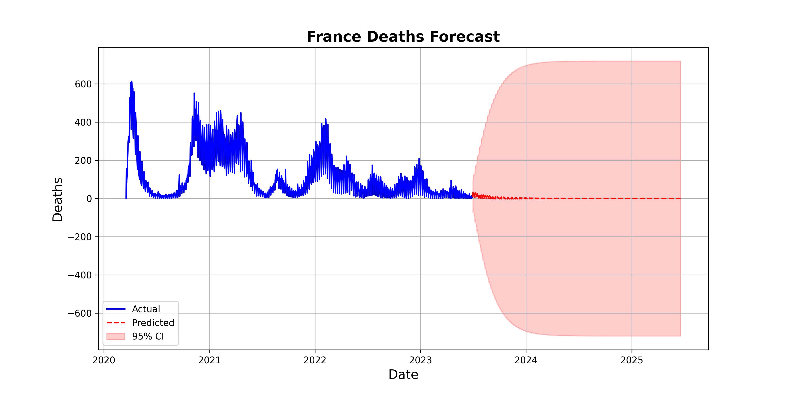

This report presents a comprehensive analysis of COVID-19 data in France, focusing on cases, deaths, hospitalizations, and vaccinations. The data is visualized through various plots and maps to provide insights into the pandemic's progression.




| Region | Total Cases | Cases per 100 | Total Deaths | Vaccination Rate (%) |
|---|---|---|---|---|
| Auvergne et Rhône-Alpes | 4,936,842 | 71.32 | 18,403 | 83.8 |
| Bourgogne et Franche-Comté | 1,550,459 | 53.98 | 7,508 | 83.1 |
| Bretagne | 1,799,348 | 51.67 | 3,728 | 85.9 |
| Centre-Val de Loire | 1,323,435 | 50.31 | 4,669 | 83.7 |
| Corse | 204,801 | 58.09 | 540 | 70.6 |
| Grand Est | 3,194,661 | 59.26 | 15,174 | 82.0 |
| Guadeloupe | 209,172 | 53.73 | 1,160 | 40.8 |
| Guyane | 98,352 | 34.06 | 416 | 34.1 |
| Hauts-de-France | 3,446,288 | 62.13 | 13,985 | 82.3 |
| Martinique | 232,251 | 63.65 | 1,168 | 43.0 |
| Mayotte | 40,536 | – | 166 | 54.2 |
| Normandie | 1,742,636 | 51.28 | 5,679 | 86.3 |
| Nouvelle Aquitaine | 3,300,204 | 53.17 | 8,048 | 85.4 |
| Occitanie | 3,559,907 | 59.47 | 9,418 | 81.3 |
| Pays de la Loire | 2,066,837 | 52.4 | 4,732 | 85.4 |
| Provence-Alpes-Côte d'Azur | 3,324,009 | 88.21 | 14,438 | 78.5 |
| Réunion | 528,504 | 60.0 | 1,009 | 66.8 |
| Île-de-France | 7,095,470 | 57.09 | 29,350 | 83.4 |

